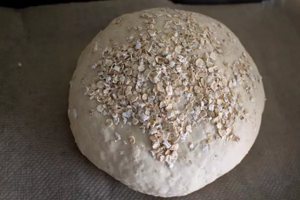

Viking Lamb

Eating Viking Bread before the battles is what makes you go Berserk (that and loads of mead).
ᚠᚱᛖᛁᚺᚨᛚᛋ ᛃᚨᚺ ᛋᚨᛗᚨᛚᛖᛁᚲᛟ ᛁᚾ ᚹᚨᛁᚱᚦᛁᛞᚨᛁ ᛃᚨᚺ ᚱᚨᛁᚺᛏᛖᛁᛋ ᚹᚨᚢᚱᚦᚨᚾᛋ ᚠᚱᚨᚦᛖᛁ ᛃᚨᚺ ᛗᛁᚦᚹᛁᛋᛋᛖᛁ ᚷᛁᛒᚾᚨᚾᛋ ᛃᚨᚺ ᛋᚨᛗᚨᛚᛖᛁᚲᛟ ᛁᚾ ᚹᚨᛁᚱᚦᛁᛞᚨᛁ ᛃᚨᚺ ᚱᚨᛁᚺᛏᛖᛁᛋ ᚹᚨᚢᚱᚦᚨᚾᛋ ᚠᚱᚨᚦᛖᛁ
Ingredients
▢ 3 cups whole wheat flour
▢ 2 cups all purpose flour
▢ 1 cup old fashioned oats
▢ 1 teaspoon baking soda
▢ 1 teaspoon salt
▢ 2 cups water
▢ 1/3 cup rolled oats
ᚠᚱᛖᛁᚺᚨᛚᛋ ᛃᚨᚺ ᛋᚨᛗᚨᛚᛖᛁᚲᛟ ᛁᚾ ᚹᚨᛁᚱᚦᛁᛞᚨᛁ ᛃᚨᚺ ᚱᚨᛁᚺᛏᛖᛁᛋ ᚹᚨᚢᚱᚦᚨᚾᛋ ᚠᚱᚨᚦᛖᛁ ᛃᚨᚺ ᛗᛁᚦᚹᛁᛋᛋᛖᛁ ᚷᛁᛒᚾᚨᚾᛋ ᛃᚨᚺ ᛋᚨᛗᚨᛚᛖᛁᚲᛟ ᛁᚾ ᚹᚨᛁᚱᚦᛁᛞᚨᛁ ᛃᚨᚺ ᚱᚨᛁᚺᛏᛖᛁᛋ ᚹᚨᚢᚱᚦᚨᚾᛋ ᚠᚱᚨᚦᛖᛁ
Preparation
- In a large bowl, combine the whole wheat flour, all purpose flour, oats, baking soda and salt.
- Add the water and stir with a wooden spoon until it is as incorporated as you can get it.
- Knead the dough with your hands for a few minutes until you get the rest of the ingredints all the way mixed in.
- Divide the dough into 6 even balls of dough.
- Place the balls onto a bakign stone and sprinkle the remainng oats on top.
- Place the baking stone in the oven and turn the oven on to 375 F.
- Bake for 20-30 minutes, or until the tops are starting to turn golden brown.
- Pull the baking stone out of the oen and let it cool for a few minutes before you enjoy!